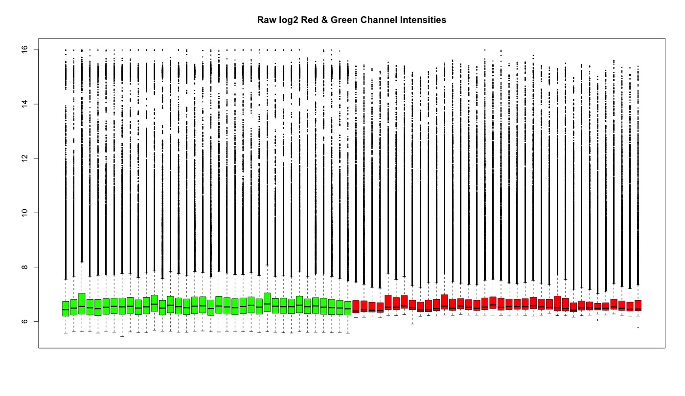
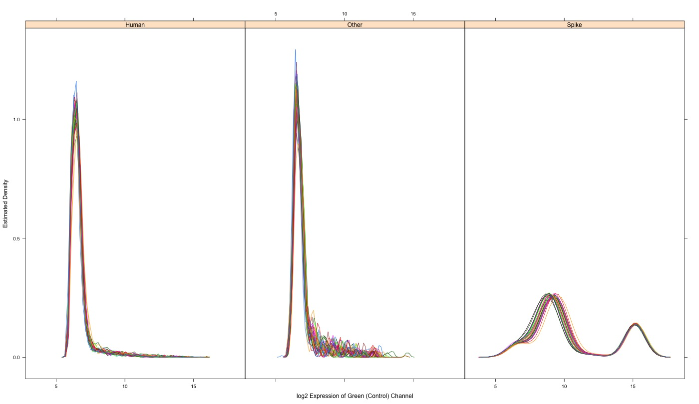
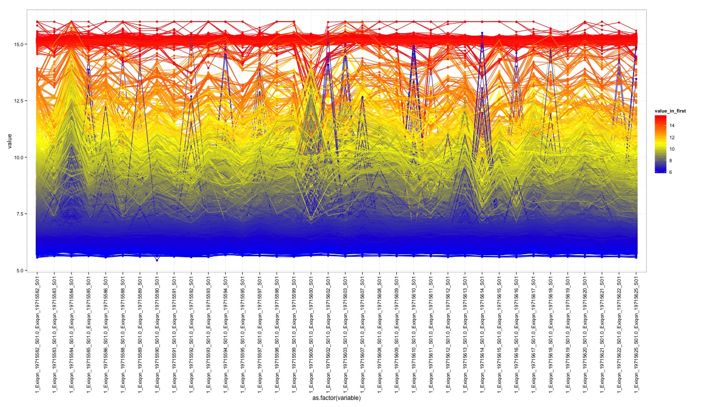

Raw Data Assessment
Boxplot
A boxplot allows us to see the distribution of raw probe values, in this case they are put under log2 due to the massive variation between raw arrays. The Red and Green colours represent the two colour channels of this experiment (H/Cy3 and H/Cy5). These plots can be used to see very obvious outliers, in this case there are a few concerning arrays, but nothing hugely offset against the consensus.
There are 36 Cy3 treated arrays and 36 Cy5 treated arrays, totalling 72 arrays.
Density Plot
A density plot is a diagnostic method to see the effectiveness of a normalisation procedure. In this case we’re looking at the raw data each line represents a density measurement of that particular class of probe (separated by Human, Other and Spike probes). At this stage we’d expect the density to follow roughly the same geometric shape as the others but be offset in places or overall, this is addressed in the normalisation stage. Human probes correlate well, as do spike probes, the variation in the ‘Other’ class is likely due to the fact that there are many different types of probes under that classification (if you were to plot EBV probes together for example, it’s likely that they’d correlate together well).
Profile Plot
At this stage, the profile plot isn’t a very useful tool, other than to look for arrays that could be outliers. The profile plot (log2 green channel) shows the change in intensity for each probe across all arrays. It’s expected to see a lot of variation at this stage, but array 19715600 (Lymphoma) raises concerns. Noise from unfiltered data is skewing any meaningful insights from this plot, at this stage.
